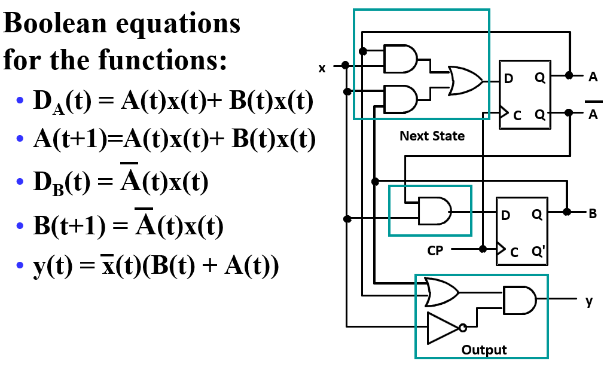
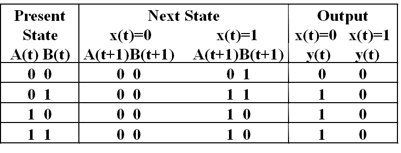
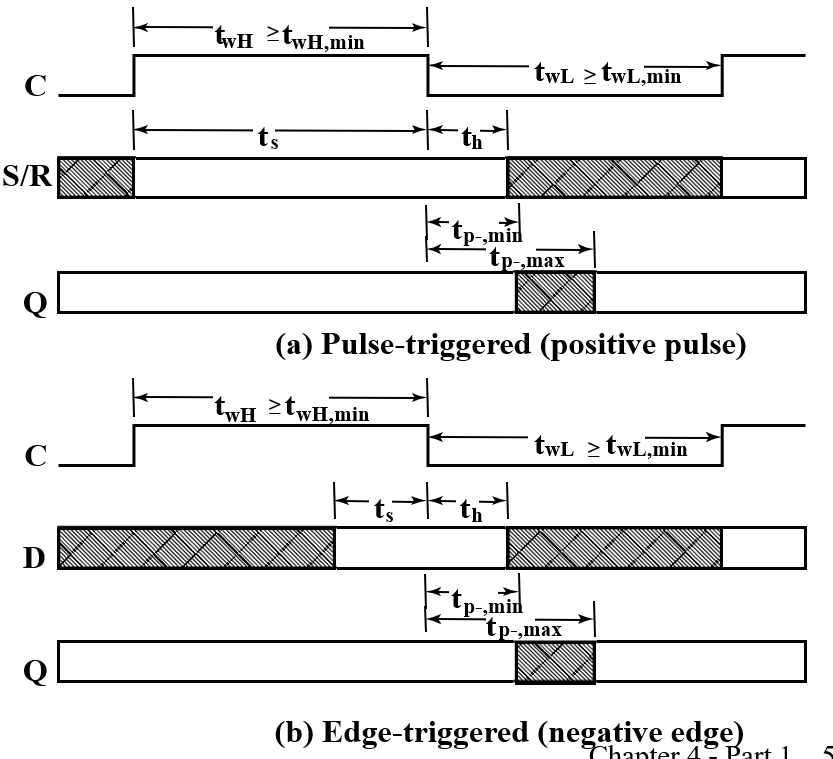
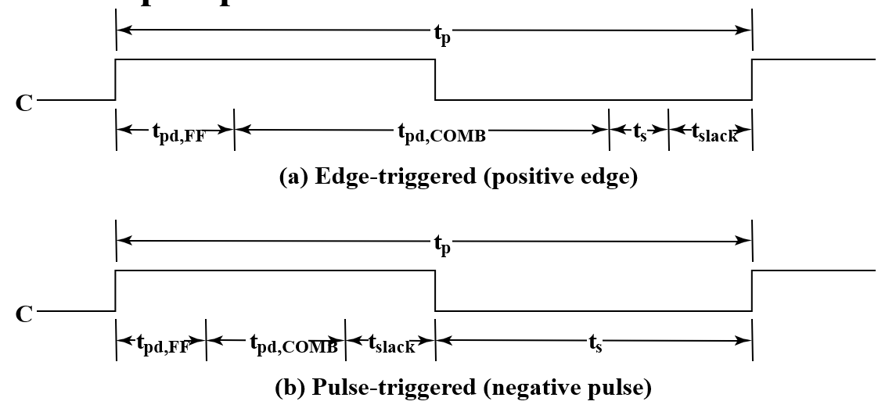
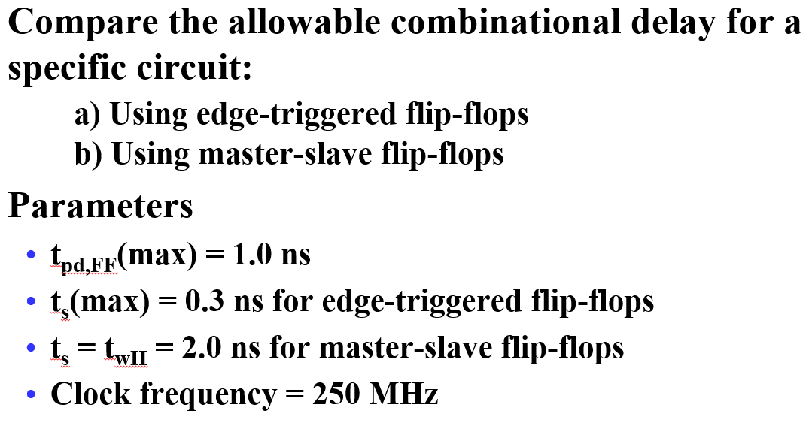
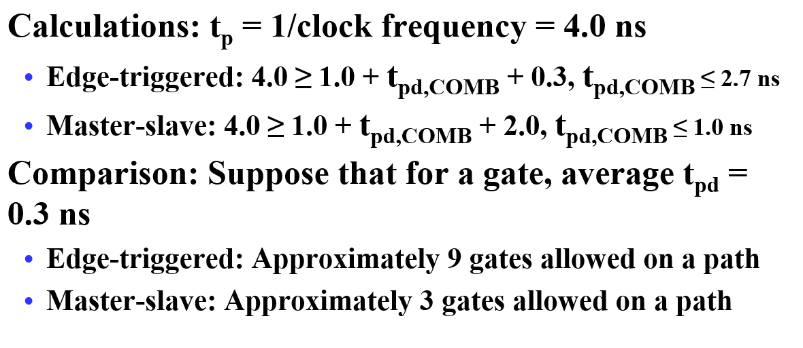

Chapter 4 Part 1
Sequential Circuits Introduction
时序电路介绍
- 组成：

- 现代复杂电路设计大多使用同步
- Storage elements: Latches or Flip-Flops
- 组合逻辑：
- Implements a multiple-output switching function
- Inputs are signals from the outside.
- Outputs are signals to the outside.
- Other inputs, State or Present State are signals from storage elements.
- The remaining outputs,Next State are inputs to storage elements.
- Combinatorial Logic:
- Next state function(次态方程): Next State = f(Inputs, State)
- Output function (Mealy): Outputs = g(Inputs, State)
- Output function (Moore): Outputs = h(State)
时序电路分类
- 同步(Synchronous)：在某几个时间检测，什么时候观测输入和改变状态仅与时间信号有关。所有元件在时钟模块控制下同时更新。同步抽象使复杂的设计变得易于处理！
CPU：同步
时钟模块：
always@ (posedge,clk) begin //只要时钟信号向上变动，就会执行该模块 ---> 只在特定情况检测 同步
end
- 异步(Asynchronous)：在任何时间都可以改变，观测输入与状态，即时响应。
离散事件仿真

Latch

- 错误由于$S$变化传到反相器输出有延迟，因此出现$S$由1变0后，$\overline{S}$并未立即由0变1，使得两者都是0，输出也变成了0
将A与Y相连，从而得到一个时序电路

- S为1时，$Y=B$，S为0时，B不改变Y，因此Y可以储存B的值
再加一个非门

- 优点：电路简单
- 缺点：频率不精确
Basic (NAND) $\overline{S} – \overline{R}$ Latch 锁存器

- 输入00是禁止的
Basic (NOR) S – R Latch

Clocked S-R Latch

- C为0，锁存器两个输入都为1，不改变值；C为1，输入相当于$\overline{S},\overline{R}$.
改进：使得没有非法情况——D Latch


Flip-Flops
The Latch Timing Problem

- 只要 C = 1，Y 的值就会继续变化！
- 所需行为：Y 在每个时钟脉冲中仅更改一次
- 解决方案是断开存储元件内从 Y 到 Y 的闭合路径，使用触发器（flip-flop）
- a master-slave flip-flop
- an edge-triggered flip-flop
S-R Master-Slave Flip-Flop

- 左主(master),右从(slave)
- 假设S=1,R=0，C由0变1，主锁存器对应Q为1；C再变0，从锁存器接收外部输入，即Q与$\overline{Q}$，对应输出Q为1
- C在任何状态，S,R输入端都不可能直接改变输出状态
- 只有当clock完成一次$0\rarr 1\rarr 0$变化的周期后，输出Q才会改变
- 问题：clock为1时，由于外部输入变化带来的累积效应，使得结果可能错误，称为1‘s catching
- 触发器输出的变化会因脉冲宽度而延迟，从而使电路变慢
- 当 C = 1 时，允许 S 和 R 更改，假设 Q = 0，S 变为 1，然后变回 0，R 保持在 0 。主锁存器设置为 1 ，1 被转移到从锁存器
- 假设 Q = 0，S 变为 1 并返回 0，R 变为 1 并返回 0 ，主锁存器设置为0，然后复位 0 被传输到从锁存器
Edge-Triggered Flip-Flop

-
主锁存器变为D锁存器
-
只看边沿情况输入决定输出，其他时候输入不影响

上升沿触发器（Positive-Triggered Flip-Flop）
Standard Symbols for Storage Elements

- 主从触发器输出侧的
 表示不允许输入改变。
表示不允许输入改变。
Actual Circuit of Edge-Triggered D Flip-Flop

6个与非门，成本较低
Direct Input

-
异步赋初值：通过S,R输入为触发器赋初值，多用于系统复位
-
若使用同步赋初值：设置D
-
对所示电路
-
0 applied to R resets the flip-flop to the 0 state
-
0 applied to S sets the flip-flop to the 1 state
Analysis

- 输入:$x(t)$,输出:$y(t)$,状态:$A(t),B(t)$
- 
a important equation:$Q=D$
Stable Table

有限状态机
- Alternate State Table 二维表：

State Diagrams
The sequential circuit function can be represented in graphical form as a state diagram with the following components：
- A circle with the state name in it for each state
- A directed arc from the Present State to the Next State for each state transition
- A label on each directed arc with the Input values which causes the state transition, and
- A label:
- On each circle with the output value produced, or
-
On each directed arc with the output value produced.
-
Moore type output depends only on state(输出画在圈里面) Mealy type output depends on state and input(输出画在有向弧上)
- Example：/左侧输入，右侧输出，由现态指向次态，下例为Mealy型

Equivalent State Definitions
两个状态等效，即对任意一种输入都产生相同的输出与次态
- 例：下图中S2与S3

因此可以改写

然后发现S1与S2等效

此时不再有可以合并的
Moore and Mealy Models
Sequential Circuits or Sequential Machines are also called Finite State Machines (FSMs). Two formal models exist:
Moore Model
- Outputs are a function ONLY of states.Usually specified on the states.

- State Table

Mealy Model
- Outputs are a function of inputs AND states.Usually specified on the state transition arcs.

- State Table

混合型写法
指向同一个次态的输出相同时把输出放进圈

One more example
模5计数器，若从0开始，则会0~4循环变化，但若外部干扰产生5-7，下次仍会切换回0-4，从而不会出现死锁与错误。


Only states reachable from the reset state 000 are used: 000, 001, 010, 011, and 100. The circuit produces a 1 on Z after four clock periods and every five clock periods thereafter: 000 -> 001 -> 010 -> 011 -> 100 -> 000 -> 001 -> 010 -> 011 -> 100 …
Filp-Flop Timing Parameters

- $t_s$：setup time，建立时间
根据定义, $t_s$指在采样前触发器需要的准备时间。对于主从触发器，在信号处于上升沿的时候 S 部分的输入是不能改变的，否则可能有一次性采样问题，因此在信号处于上升沿都是触发器的准备时间。这也是为什么现在我们普遍使用边缘触发器的原因。 对于 D 触发器而言，不要卡在时钟边沿改变 D 的输入，而是在时钟改变之前就进行，这样 D 触发器才能有足够的准备时间。
- $t_h$：hold time，触发边沿后过一段时间输入才能改变。现在多数触发器$t_h$可以是0
-
$t_w$：clock pulse width
-
$t_{px}$：propagation delay. Measured from clock edge that triggers the output change to the output change.
-
$t_{PHL}$ :High-to-Low $t_{PLH}$ :Low-to-High $t_{pd}$:max ($t_{PHL}$,$ t_{PLH}$)
Circuit and System Level Timing
-
New Timing Components
-
$t_p$ clock period - The interval between occurrences of a specific clock edge in a periodic clock
-
$t_{pd,COMB}$ :total delay of combinational logic along the path from flip-flop output to flip-flop input
组合逻辑在触发器输出到触发器输入路径上的总延迟
-
$t_{pd,FF}$：触发器总延迟
-
$t_{slack}$ ： extra time in the clock period in addition to the sum of the delays and setup time on a path 可以是正数，也可以是负数 所有路径上的必须大于或等于零才能正确操作 Must be greater than or equal to zero on all paths for correct operation

-
Timing Equations： $$ t_p=t_{slack}+(t_{pd,FF}+t_{pd,COMB}+t_s) $$ For $t_{slack}$ greater than or equal to zero, $$ t_p\geqslant max(t_{pd,FF}+t_{pd,COMB}+t_s) $$ for all paths from flip-flop output to flip-flop input
-
Calculation of Allowable $t_{pd,COMB}$


因此更多使用边沿触发器